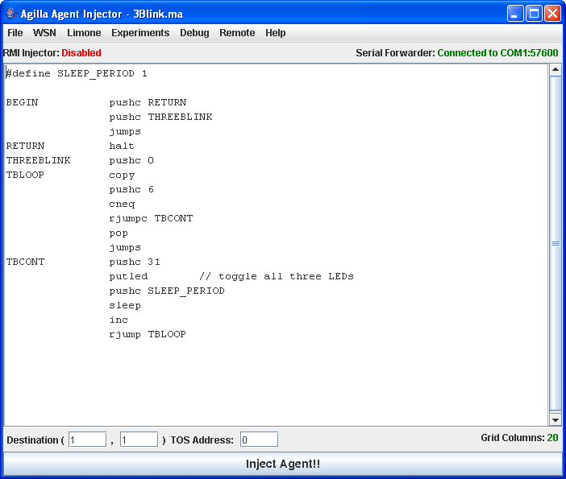
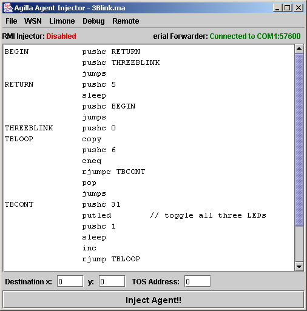

Lesson 2: Injecting an agents into a Network
Last Updated on
November 29, 2005 1:41 AM
.
Example Agilla agents can be found in $TOSROOT/contrib/wustl/apps/AgillaAgents.
Read the README file within this directory for a description of each
agent.
Configuring the AgentInjector
The AgentInjector searches for an agilla.properties file in the
directory from which you launched it. This file may contain the
following properties:
initDir=../../apps/AgillaAgents
defaultAgent=3Blink.ma
runTest=false
Injecting an Agent
To inject an agent into the network, you have
open them using the AgentInjector, and select the destination location.
- Run the Agent Injector:
$ java edu.wustl.mobilab.agilla.AgentInjector -comm COM1:115200 -d
The AgentInjector GUI will appear:

- Go to File, Open, and choose 3Blink.ma.
You should see the following:

- The instructions shown in the main text area are
the 3Blink agent's. 3Blink simply blinks all 3 LEDs
three times, pauses, and repeats. Below this text area is a panel
that allows you to specify which location to inject the agents
into. Currently, it's set to node (0,0) which has an TOS Address
of 0. The location and TOS Address are related as described here.
If this is not correct, check the
size
of the network by going to
WSN and selecting Grid Size.
- Hit the Inject
Agent! button at the bottom of the Agent Injector and the
agent should be injected into the network. If you selected a
destination
location that is not immediately connected to the PC, you will see
the base station mode briefly blink its red and green LEDs to indicate that the agent
bounced off of it.
This work is supported by the ONR MURI Project CONTESSA
and the NSF under grant number CCR-9970939.